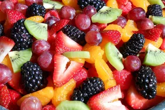

Fruit Salad

Ingredients
This fruit salad is perfect for a backyard bbq or any occasion. There are never leftovers! This is one of my favorite fruit salad recipes, as I think the citrusy sauce really makes it. This salad is tastier the longer you can let it soak in its juices. I prefer 3 to 4 hours in the refrigerator before I serve it.
Ingredients
sauce
- fresh orange
- lemon juices
- brown sugar
- grated orange
- lemon zests
- vanilla extract
fruit
- pineapple
- strawberries
- kiwis
- bananas
- oranges
- grapes
- blueberries
Steps
- Make the sauce on the stove and let it cool.
- Arrange the fruits in a container, then pour the sauce over them.
- Cover and refrigerate to allow the flavors to meld.